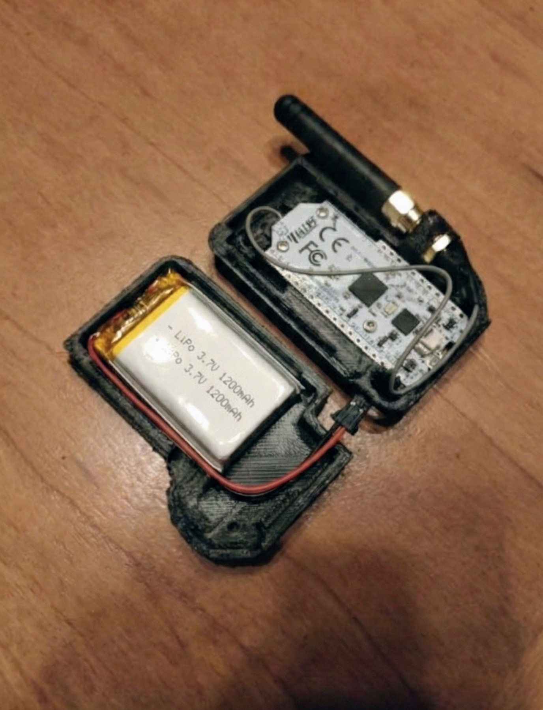

# LOG_OUTPUT: Marauder CLI Firmware v1.2
> scan ap
Scanning in promiscuous mode (Ch 1-13)... DONE.
Found 3 Access Points:
| BSSID | CH | RSSI | ENC | SSID |
|---|---|---|---|---|
| 00:1A:2B:3C:4D:5E | 6 | -52 | WPA2 | Corp_WiFi_Guest |
| A1:B2:C3:D4:E5:F6 | 11 | -76 | WPA/WPA2 | CoffeeShop_Free |
| 11:22:33:44:55:66 | 1 | -89 | WEP | <hidden> |
> sniff beacon -w sniff_log.pcap
Starting packet capture on channels 1,6,11...
Project Concept & Comparison with Standard Dongles
Standard Wi-Fi auditing environments typically rely on heavy external USB wireless adapters (such as Alfa Network cards) connected to a laptop running Kali Linux. This hardware stack is bulky, draws significant power, and is difficult to deploy discreetly.
The Project Marauder is an ultra-portable, standalone pocket device running custom C/C++ firmware directly on an ESP32 microcontroller:
- Pocket Form Factor: Fits in the palm of a hand, requiring no external computer or monitor to operate.
- Promiscuous Mode Interception: Intercepts raw 802.11 management and data frames straight out of the air.
- Onboard Storage Logging: Writes captured EAPOL handshakes directly to physical MicroSD cards in standard PCAP format.
Hardware Adaptations: Taming the ESP32 Board
Building a miniature wireless audit tool requires optimizing peripheral buses, memory constraints, and RF range on a low-cost microcontroller development board:
> 1. Chip Selection & Low-Power Operations
The core utilizes an ESP32-WROOM-32D module. Its dual-core processor allows separating the RF sniffing tasks from the I/O interface tasks. Under deep sleep states, it draws less than 15µA, enabling prolonged operational shelf-life, and runs on a single 18650 lithium battery.

> 2. SPI Peripheral Storage Integration
Microcontrollers lack large memory buffers. To capture packet streams, a physical MicroSD card slot was integrated over the SPI bus. The firmware allocates dedicated GPIO pins (MISO/MOSI/SCK/CS) and uses hardware SPI drivers to achieve fast write speeds without dropping packets.
> 3. RF Range Modification (SMA Antenna)
Standard ESP32 boards rely on small PCB trace antennas, which have limited range. The board's trace was physically modified: the on-board antenna path was severed, and an external SMA antenna connector was soldered, allowing the connection of a high-gain +5dBi antenna for long-range wardriving.
> 4. Standalone UI Controls (TFT Screen & Joystick)
To enable on-the-fly configuration without requiring a terminal interface, a SPI-driven TFT screen and a miniature analog joystick were wired to the GPIO headers. This configuration allows selecting targets and firing attacks directly from the device screen.